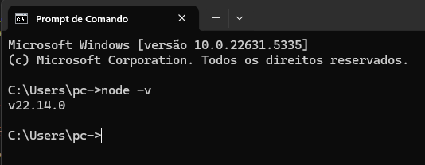
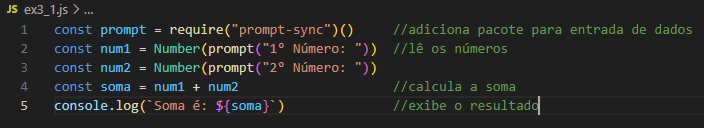
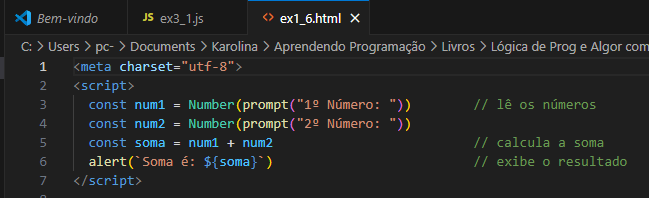
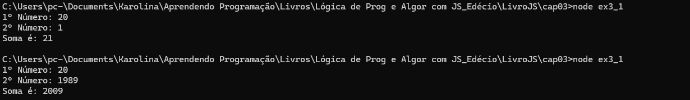
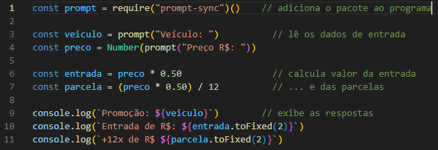
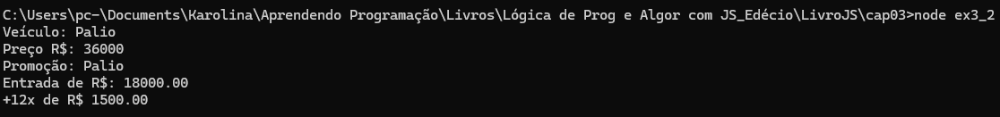
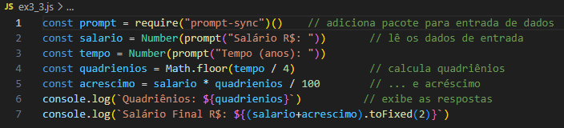
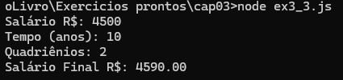
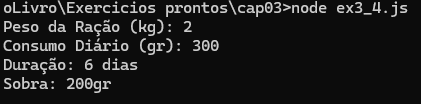
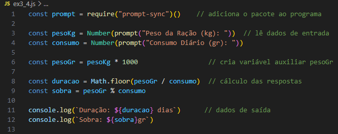

Observação: Neste capítulo, adicionamos o pacote prompt-sync(), que permite a entrada de dados via prompt de comandos.
Nos exemplos construídos nos dois capítulos iniciais deste livro, não foi necessário instalar nenhum software adicional na sua máquina. O browser já contém um interpretador para executar os programas JavaScript.
Existe também outro modo de construir algoritmos com JavaScript, que é utilizando o Node.js. Nesse modo, semelhante ao que acontece com linguagens de programação tradicionais como Python, Java e C#, é necessário instalar a linguagem na sua máquina e executar os programas a partir de um prompt de linha de comandos.
O Node.js é, conforme o que está documentado em sua página oficial (nodejs.dev), um ambiente de execução de programas JavaScript gratuito, de código aberto e multiplataforma que permite aos desenvolvedores escrever programas de linha de comandos e scripts do lado do servidor fora de um navegador. Os recursos e comandos utilizados para a criação de estruturas de condições, repetições e vetores, que serão apresentados nos capítulos seguintes são os mesmos. O que muda é que você não estará rodando o seu programa a partir de um navegador web, e sim a partir de um prompt de comandos.
Este capítulo tem por objetivo apresentar o processo de construção de algoritmos utilizando o Node.js. Caso você não pretenda instalar o Node.js na sua máquina, pode pular para o capítulo seguinte e prosseguir seus estudos em JavaScript com a construção de Algoritmos que rodam no navegador web. Caso você goste desse formato de desenvolver seus estudos de técnicas de programação em JavaScript, utilizando o Node.js - que se assemelha ao formato tradicional de ensino de programação, siga os passos descritos nas próximas seções.
Para instalar o Node.js, vá até o site do ambiente nodejs.dev e selecione a opção download. Baixe o instalador de acordo com o sistema operacional da sua máquina. Após baixar, execute-o e nas próximas telas, Next > Next > Install > Finish, concluída a instalação, acesse o prompt de comandos e execute o comando node -v. Ele serve para exibir a versão do Node.js instalada, além de indicar que o processo de instalação foi realizado com sucesso.
O passo seguinte à instalação do Node.js é adicionar um pacote que permitirá que os nossos programas façam a entrada de dados via linha de comando. Vamos utilizar o prompt-sync(). Existem diversos outros, mas esse contém os recuros básicos necessários para o desenvolvimento de Algoritmos - que é a proposta deste livro. Vamos inicialmente criar a pasta cap03, em livrosjs(como nos exemplos anteriores). Podemos fazer a criação da pasta via linha de comandos. Nas linhas de código a seguir, acessamos a pasta livrosjs, intalams o pacote prompt-sync, criamos a pasta cap03 e, na sequência, entramos nesta pasta:
Após a execução desses comandos, foi adicionada ao diretório (pasta) livrosjs a pasta node-modules. Ela contém os pacotes que foram adicionados ao projeto. Além dela, também foram criados arquivos .json - tema abordado no Capítulo 12. É importante destacar que os programas a serem desenvolvidos com o Node.js (e que utilizam o prompt-sync) precisam estar em pastas que ficam dentro do livrosjs, uma vez que o pacote prompt-sync foi instalado nela.
Vamos agora criar e executar o nosso primeiro programa em JavaScript a partir do Node.js. Abra o Visual Studio Code (você pode fazer isso digitando code . na linha de comando), crie um novo arquivo com o nome ex3_1.js. Vamos ajustar um programa de cada um dos capítulos anteriores para rodar neste modelo. Veja e insira o seguinte código no arquivo:
Código JavaScript do programa Soma 2 Números (ex3_1.js)
Compare com o Exemplo 1.6 e observe a semelhança! Neste modelo, não é necessário inserir os comandos entre as tags <script> e </script>. Contudo, precisamos acrescentar o comando const prompt = require("prompt-sync")(). O comando console.log() exibe a resposta do programa e também pode ser utilizado nos programas que rodam no browser, como indicado na seção 1.5.
Abaixo, imagem do Exemplo 1.6 página 37 no capítulo 1, que faz a Soma de dois números (exemplo ex1_6.tml).
Após salvar o arquivo, volte ao prompt de comandos e execute a instrução node ex3_1. Não é necessário informar a extenção do nome do arquivo (.js). A seguir, um exemplo da execução desse programa.
O exemplo do Capítulo 2 que vamos adaptar para rodar a partir do Node.js é o programa ex2_1.js. Crie o arquivo ex3_2.js com o seguinte código:
Código JavaScript do programa Revenda (ex3_2.js)
Novamente, após salvar o arquivo, retorne ao prompt para rodar este programa:
Vamos praticar o desenvolvimento de programas utilizando o Node.js? Leia o enunciado e tente construir o Algoritmo. Após, veja o exemplo de correção com os comentários.
a) Elaborar um programa para uma empresa que leia o salário e o tempo que um funcionário trabalha na empresa. Sabendo que a cada 4 anos (quadriênio) o funcionário recebe um acréscimo de de 1% no salário, calcule e informe o número de quadriênios a que o funcionário tem direito e o salário final.
leia com bastante atenção o enunciado do exercício e siga os passos dos exemplos anteriores: crie, edite e salve o arquivo. Para verificar se o programa está funcionando corretamente, volte ao prompt e rode o comando node nomeprog. Caso ocorra algum erro, retorne ao editor, ajuste a linha indicada, salve o arquivo e rode-o novamente. A seguir, um exemplo de resposta para este exercício.
Observe que as etapas de entrada de dados, processamento e saída se mantêm como padrão. Um detalhe no exemplo de resposta do programa ex3_3.js é que o cálculo do salário final é realizado na saída dos dados ${(salario+acrescimo).toFixed(2)}, sendo mais um recurso que pode ser utilizado na construção de nossos algoritmos. Veja este programa em execução:
b) Elaborar um programa para uma veterinária, que leia o peso de uma ração em kg e o quanto um gato consome por dia da ração, em gramas. Informe quantos dias irá durar a ração e o quanto sobra da ração (em gramas).
Após finalizado, o programa deve rodar da seguinte forma:
Código JavaScript do programa Veterinária (ex3_4.js)
No exemplo da solução do ex3_4.js, criamos uma variável auxiliar para calcular o peso em gramas (pesoGr). Como o cálculo do peso da ração em gramas é utilizado nas duas fórmulas, torna-se interessante atribuir esse cálculo a uma variável.
Desenvolver algoritmos utilizando a linguagem JavaScript pode ser dar de inúmeras formas. Nestes três primeiros capítulos do livro são apresentados três modelos - sendo que os dois primeiros rodam diretamente no navegador web e não necessitam da instalação de nenhum software adicional. No modelo apresentado neste capítulo, os exemplos são construídos para rodar a partir do Node.js, um software que deve ser instalado na máquina e é responsável por rodar programas JavaScript em um servidor web. Vamos conversar mais sobre esse processo no capítulo 12.
O Node.js permite que vários pacotes adicionais sejam acrescentados aos nossos programas, tornando-os aptos a realizar tarefas além das básicas disponíveis na linguagem, como pacotes que permitem configurar e enviar e-mails, se comunicar com bancos da dados, manipular imagens etc. Neste capítulo adicionamos o pacote prompt-sync(), que permite a entrada de dados via prompt de comandos.
O interassante do Node.js é que a sintaxe das instruções JavaScript é a mesma da utilizada para rodar os scripts no browser. Então, essa é uma ótima forma de treinar a escrita de códigos JavaScript.